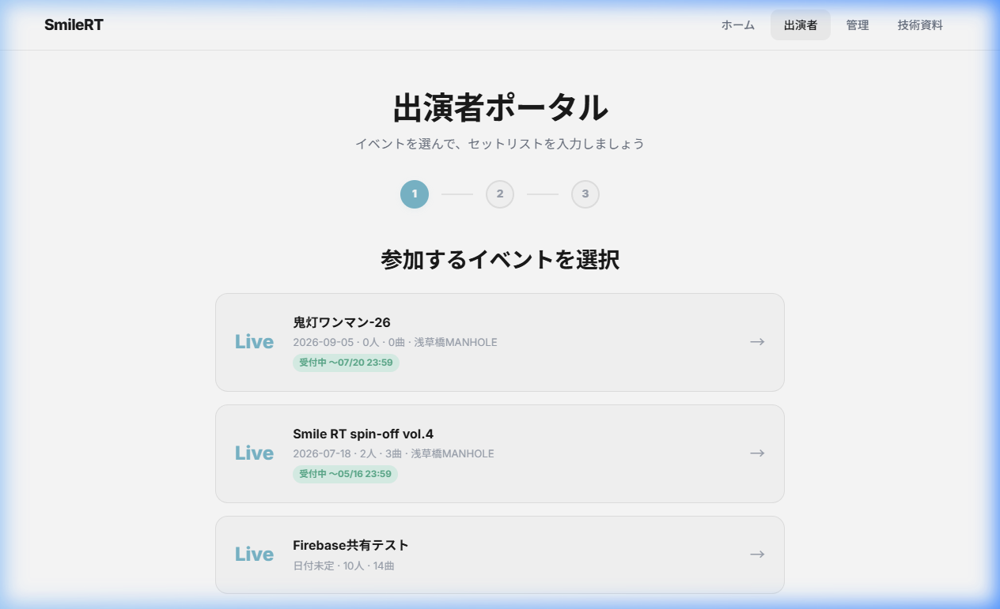
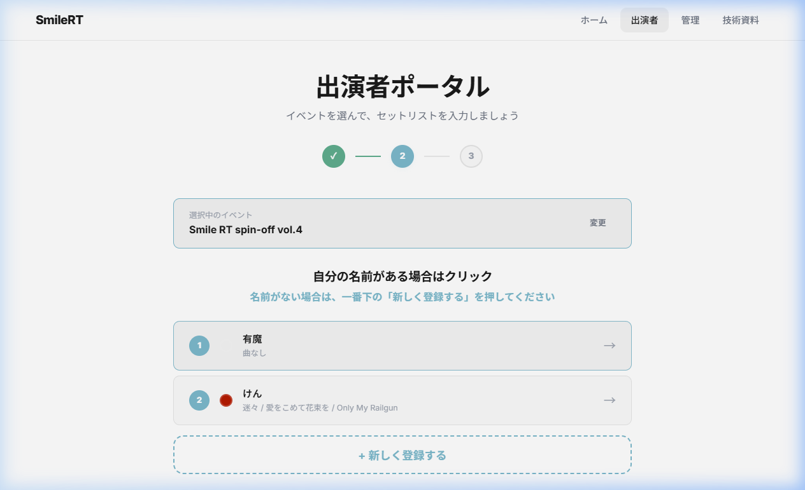
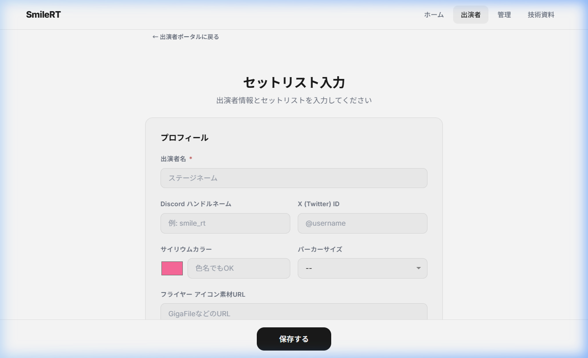
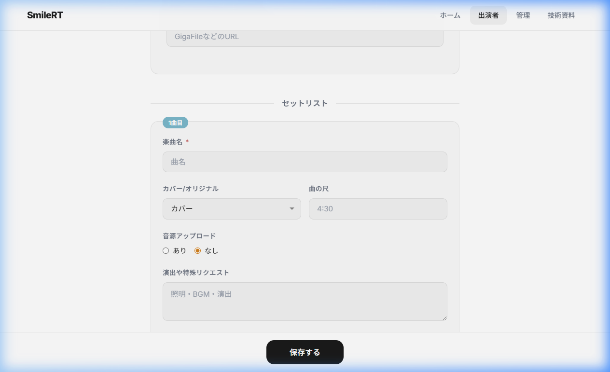
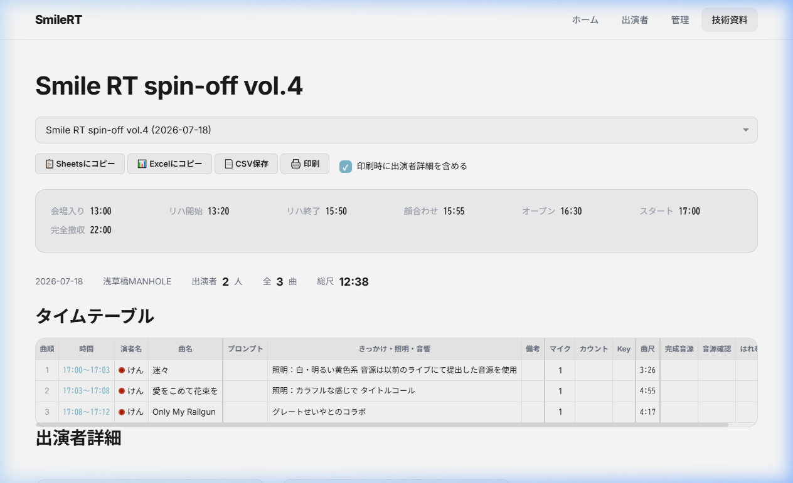

📖 出演者ガイド
セットリストの入力方法と技術資料ページの見かたを図付きで解説します
🎤 セットリスト入力の流れ
出演者ページでは 3ステップ で入力が完了します。
1 イベントを選択する
ナビゲーションの 「出演者」 をタップすると出演者ポータルが開きます。
参加するイベントをタップして選択してください。

← ここをタップ！
現在のステップ
参加するイベントをタップ！
「受付中」= 入力OK
「受付中」と表示されているイベントだけ選択できます。期限が過ぎると「受付終了」になり入力できなくなります。
2 自分の名前を選ぶ／新規登録する
イベントを選ぶと出演者一覧が表示されます。
自分の名前がある場合 → その名前をタップ
名前がない場合 → 一番下の 「+ 新しく登録する」 をタップ

選択したイベント名
自分の名前をタップ
名前がなければここ！
3 プロフィールを入力する
入力フォームが開きます。まず上部の プロフィール を入力してください。

必須！ステージネームを入力
任意：連絡先
色を選択 or 色名入力
パーカーサイズ選択
4 セットリスト（曲）を入力する
下にスクロールすると セットリスト入力欄 があります。
曲名・尺・カバー/オリジナルなどを入力し、複数曲ある場合は 「+ 曲を追加する」 をタップ。

必須！曲名を入力
カバー or オリジナル ＆ 曲の尺
完成音源がある場合は「あり」
照明・演出のリクエストを記入
最後に必ず保存！
入力が終わったら必ず画面下の 「保存する」ボタン をタップしてください。保存しないとデータが消えてしまいます！
曲を2曲以上演奏する場合は、「+ 曲を追加する」ボタンで曲を追加できます。曲順はドラッグで入れ替えられます。
📋 技術資料ページの見かた
技術資料ページでは、入力された情報がタイムテーブル形式で自動的にまとまります。
自分の入力内容が正しく反映されているか確認できます。
📋 技術資料の各エリア

イベントを選択するドロップダウン
当日のスケジュール一覧
出演者数・曲数・総尺のサマリー
タイムテーブル：曲順・時間・演者・曲名が一覧
コピー・CSV・印刷ボタン
技術資料はスタッフ・PA向けの資料ですが、出演者も自分の入力内容を確認するのに使えます。「自分の曲名や尺が正しいか」チェックしてみてください。
📊 タイムテーブルの列の意味
| 列名 |
意味 |
| 曲順 | 全体の通し番号 |
| 時間 | 出番の開始〜終了時刻 |
| 演者名 | 出演者名（サイリウムカラー付き） |
| 曲名 | 楽曲名（オリジナルは O バッジ） |
| きっかけ・照明・音響 | 演出リクエストの内容 |
| 曲尺 | 曲の長さ（分:秒） |
| 完成音源 | 音源の提出ステータス |
？ よくある質問
Q. 入力を間違えたらどうすればいい？
→ 出演者ページから同じイベント → 自分の名前を選ぶと、もう一度編集できます。修正後に「保存する」を忘れずに！
Q. 曲を追加・削除したい
→ 「+ 曲を追加する」で追加、各曲カードの右上「✕」で削除できます（最低1曲は必要です）。
Q. 受付終了と表示されて入力できない
→ 主催者が設定した締切を過ぎています。変更が必要な場合は主催者にご連絡ください。
Q. 音源はどうやって提出する？
→ GigaFile便などにアップロードし、そのURLを「音源アップロード」の欄に貼り付けてください。
SmileRT LIVE Manager — 出演者ガイド